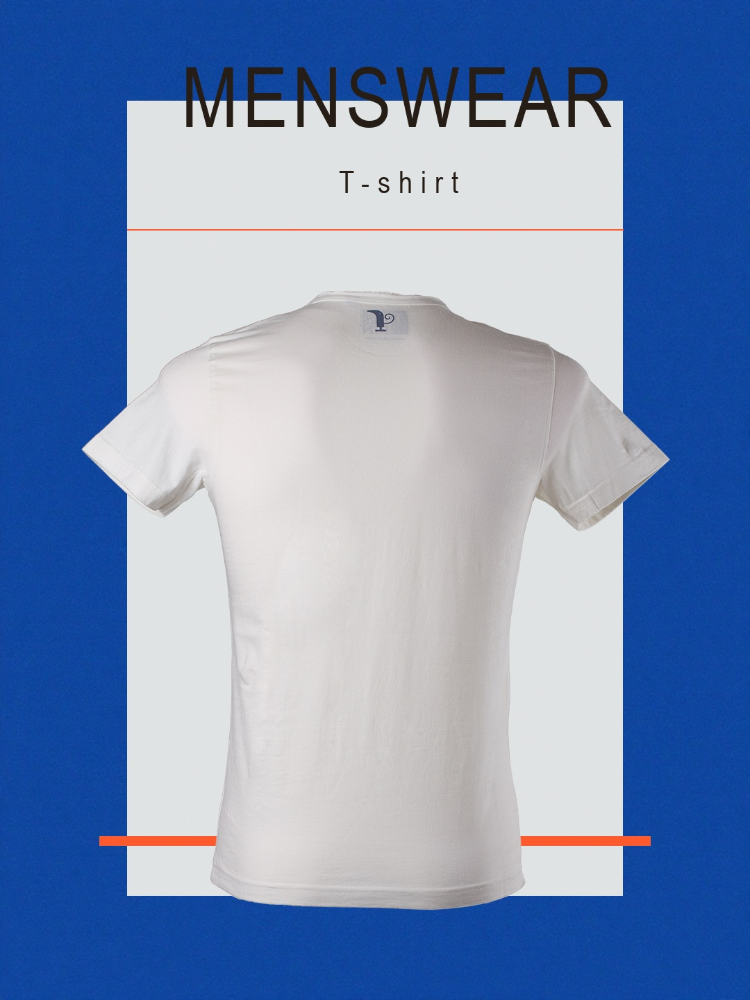
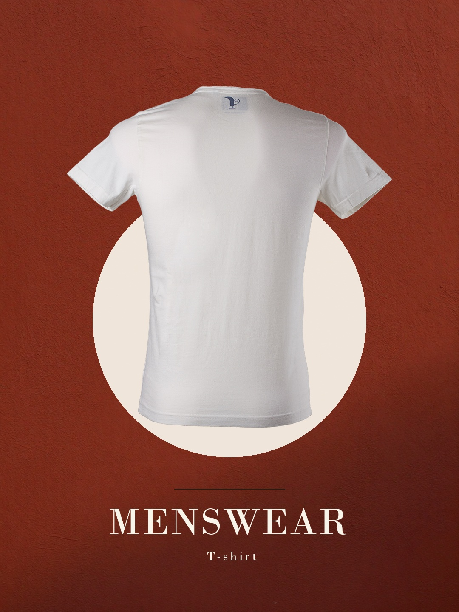
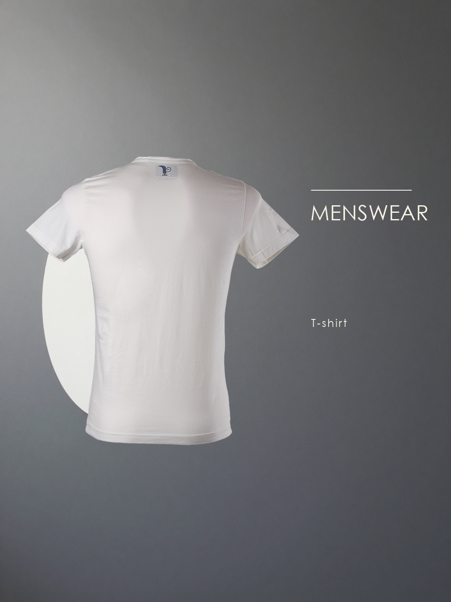
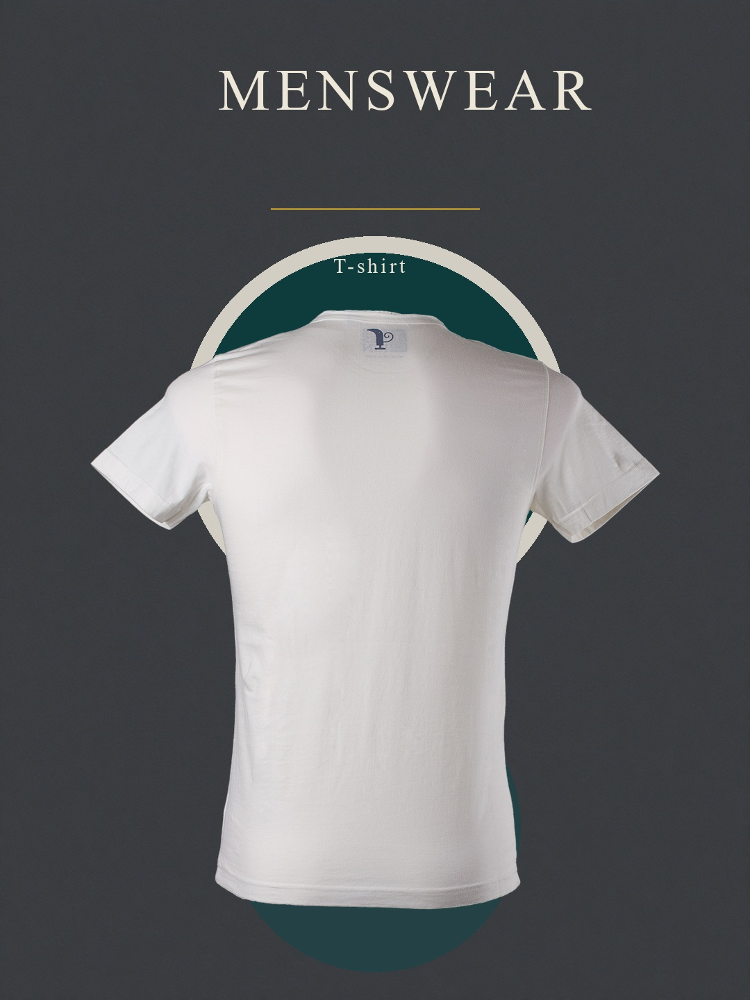
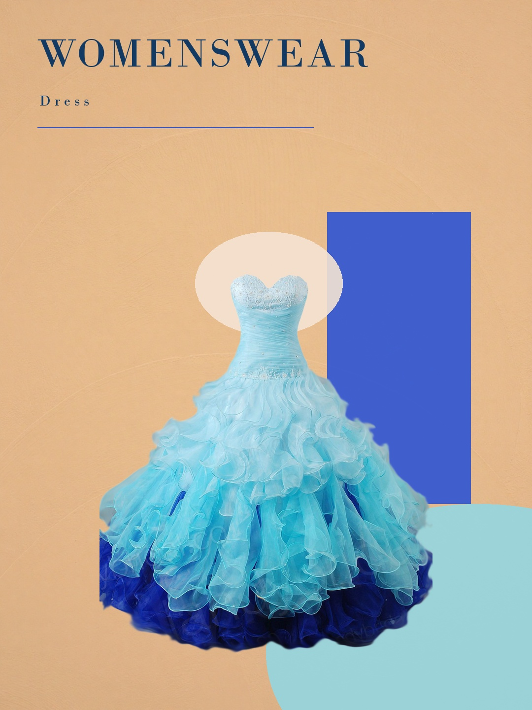
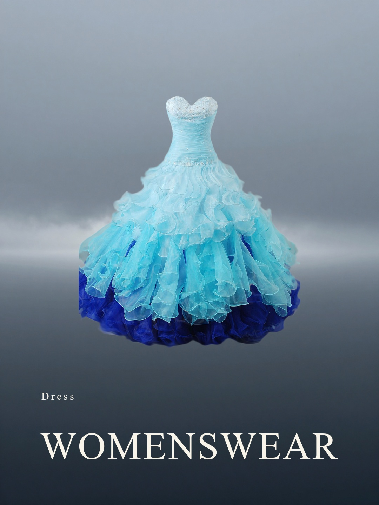
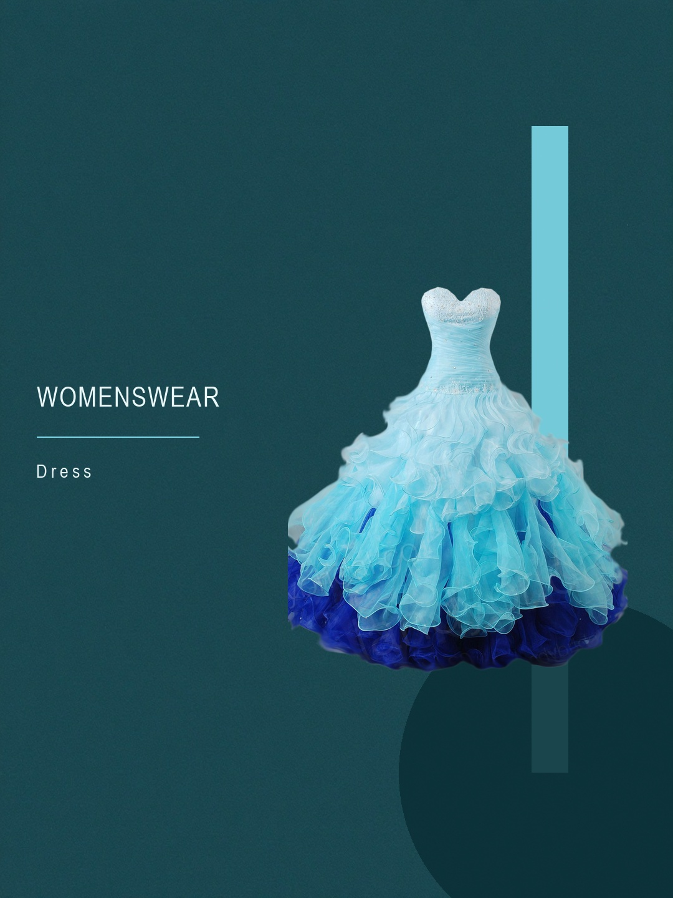
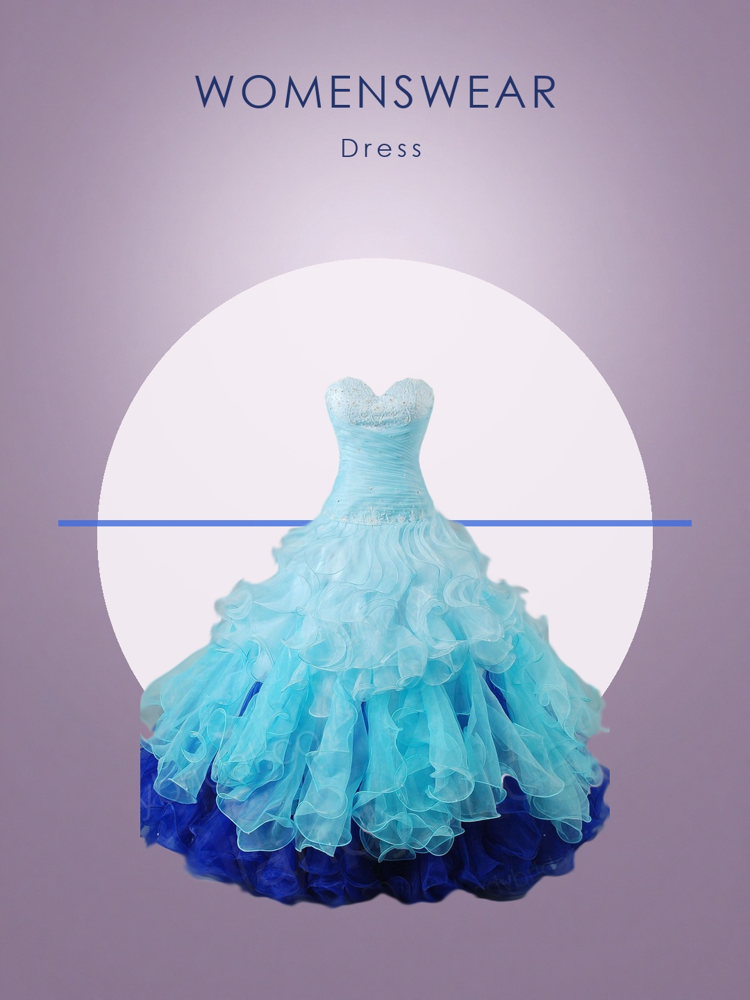

Ultramarine Slab / Condensed Banner
PASS真实 ComfyUI 多类别节点 → 千问 Director → 渲染 → 看图 Critic → 修改。NEEDS_REVIEW 表示仍有设计问题；模型 PASS 仍须人工验收。
FINISHED

Ultramarine Slab / Condensed Banner
PASS
Rust Arc / Bodoni Footline
NEEDS_REVIEW
Graphite Column / Gothic Side Rail
NEEDS_REVIEW
Petrol Halo / Times Masthead
NEEDS_REVIEWFINISHED

Plaster Arcs Study
NEEDS_REVIEW
Sea-Fog Horizon
NEEDS_REVIEW
Tide Column
NEEDS_REVIEW
Halo Plate
NEEDS_REVIEW